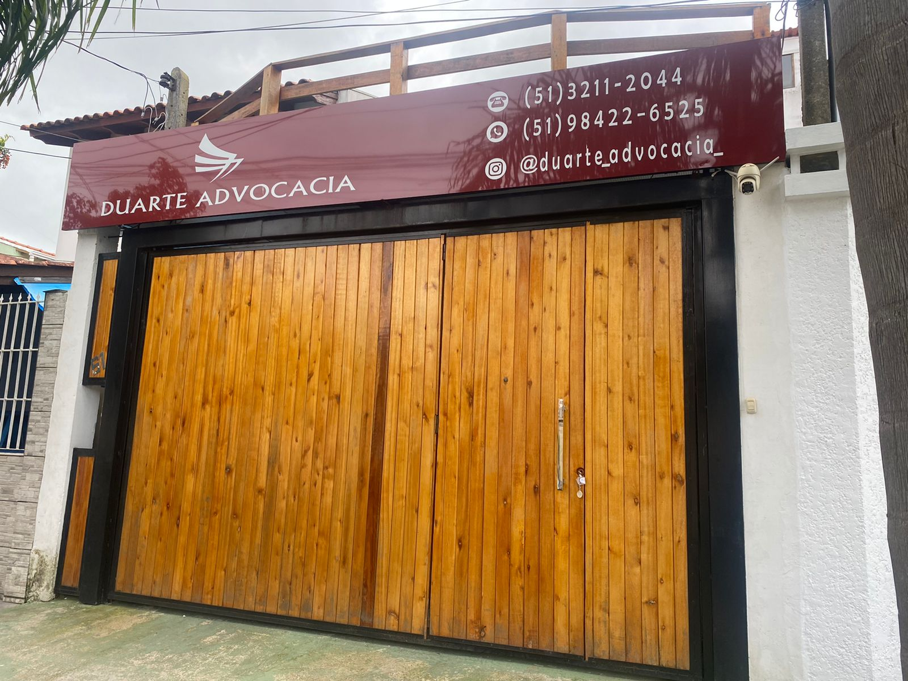

Direito Cível
Contratos, cobranças, indenizações, relações de consumo e disputas patrimoniais, com foco em resolver antes de virar processo longo.
Cível, previdenciário, criminal, trabalhista, família e sucessões, atendidos pela Duarte Advocacia com nota 5,0 e 58 avaliações no Google. Fale agora pelo WhatsApp e explique o seu caso.

Há 20 anos a Duarte Advocacia atua em Porto Alegre oferecendo suporte jurídico em múltiplas frentes, do direito cível ao criminal, passando por previdenciário, trabalhista, família e sucessões. Em vez de encaminhar o cliente para escritórios diferentes a cada tipo de problema, a mesma equipe acompanha o caso do início ao fim.
À frente dos atendimentos está a advogada Marli Duarte, citada com frequência nas avaliações do escritório pela atenção e pela clareza na condução de cada processo, o que se reflete na nota máxima nas avaliações públicas do Google: 5,0, com 58 avaliações.
Da questão trabalhista ao inventário de família, cada caso é tratado com a mesma atenção que sustenta a nota 5,0 do escritório.
Contratos, cobranças, indenizações, relações de consumo e disputas patrimoniais, com foco em resolver antes de virar processo longo.
Aposentadoria, revisão de benefício, auxílio-doença e demais pedidos junto ao INSS, do requerimento administrativo à via judicial.
Defesa em inquéritos e processos criminais, com acompanhamento em todas as fases, do primeiro atendimento ao julgamento.
Rescisões, verbas não pagas, horas extras e demais direitos do trabalhador, avaliados com atenção antes de qualquer ação.
Divórcio, pensão alimentícia, guarda e demais questões familiares, conduzidas com a sensibilidade que o tema exige.
Inventário, partilha de bens e testamento, com orientação clara sobre prazos e documentação desde a primeira conversa.
Duas décadas de escritório aberto em Porto Alegre, atravessando várias áreas do direito sem trocar de endereço nem de equipe.
Sem uma avaliação sequer abaixo de 5 estrelas, construída um atendimento de cada vez, não em campanha.
Um retrato do que os clientes escrevem, sem edição, sobre o atendimento da Duarte Advocacia.
"Quero agradecer muito a Marli e a Duarte advocacia, pois estava com uma questão internacional, e com total atenção e presteza, ela conseguiu resolver todas as questões de modo muito profissional."
William Franqui, avaliação no Google"Encontrei o escritório por indicação e a melhor decisão que tomei foi contratar os serviços prestados nesse escritório."
Carol Kindlein, avaliação no Google"Atendimento e acompanhamento maravilhoso. Profissionais atenciosos, competentes e qualificados."
Viviane, avaliação no GoogleO mesmo caminho para qualquer uma das seis áreas atendidas pelo escritório.
Mensagem pelo WhatsApp explicando a situação, para entender o caso e a área do direito envolvida.
Avaliação do histórico e da documentação disponível, com retorno sobre viabilidade e possíveis caminhos.
Definição da estratégia mais adequada, com explicação clara sobre prazos, custos e próximos passos.
Atualização periódica sobre o andamento do processo, do início até a conclusão do caso.
Sede na Hípica, Zona Sul de Porto Alegre, com atendimento presencial agendado e primeiro contato sempre pelo WhatsApp.
As dúvidas mais comuns de quem está pensando em procurar o escritório.
Envie uma mensagem contando a sua situação e receba orientação sobre os próximos passos, com a mesma atenção que sustenta os 20 anos e a nota 5,0 do escritório.
R. Eliza Tevah, 61, Hípica, Porto Alegre, RS